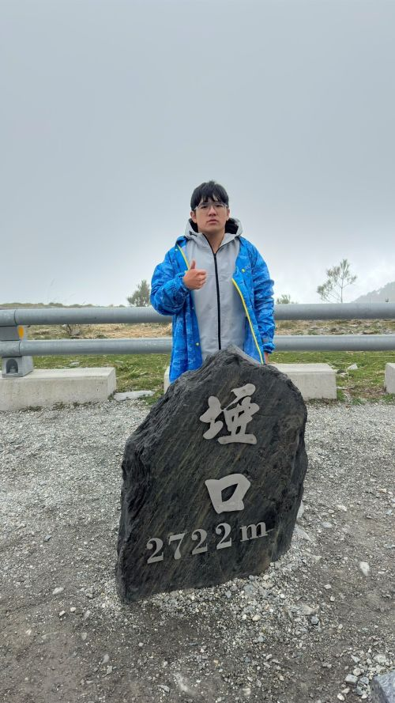
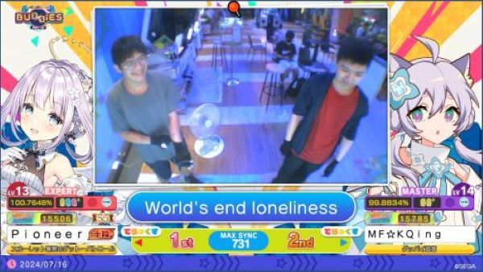
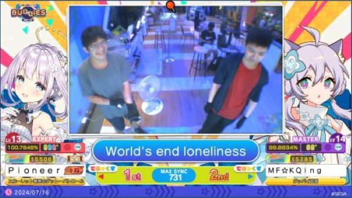
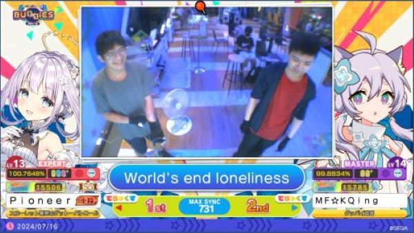

我的興趣
- 音樂遊戲：maimai、wacca、pjsk、chunithm等等各有涉略。
- 戶外活動：喜歡騎車兜風，到沒去過的地方看看風景。
- 運動:健身、跑步。
maimai、chunithm是SEGA旗下的街機遊戲，目前已經滿十周年，主要為於亞洲地區居多，目前已經舉辦過五次比賽(日服、海外服)。
平時主要是跟朋友一起玩，作為主要休閒活動，結合聽音樂的遊戲對於我來說是一種雙重享受。
wacca是Marvelous旗下的音樂街機，與HARDCORE TANO*C共同開發，2019年開始營運，於2022/8/31終止營運
陪伴我高中時期的遊戲，從高一時開始被朋友推薦玩這款遊戲，一路玩到高三時停止營運，對我來說是一款重要的遊戲。
目前有參加學校的機研社，偶爾會騎車出遊，平時就了解一些有關機車的保養、安全方面的知識，也會趁假日有空時去沒去過的地方看看風景、吃吃美食。
大一時接觸健身，讓自己不要繼續胖下去，為了健康著想，所以開始動起來，讓運動融入生活，成為興趣的一部分，才能長期堅持。
平時會在課餘時間去學校的健身房運動，裡面的器材算完整，非常夠用，因為我是住校外，所以需要付一次50元的使用費。而沒去學校時就會去台東體育場跑步當作運動
我的作品集

 

